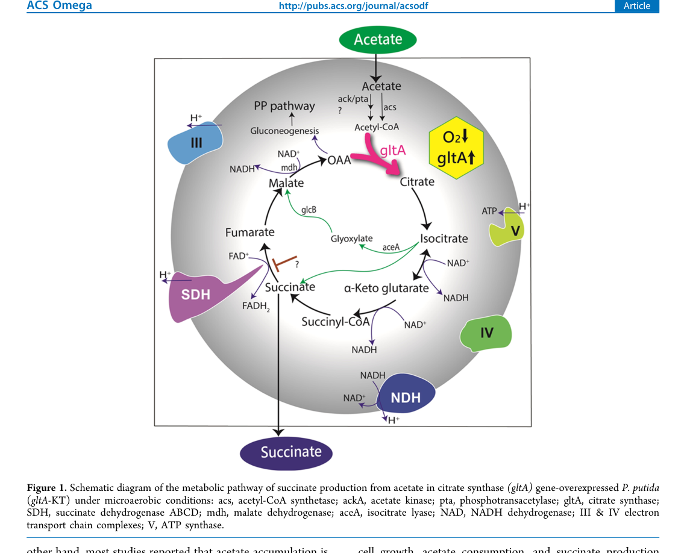
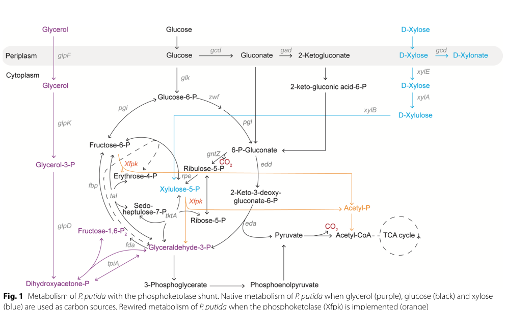

Phosphate acetyltransferase (phosphotransacetylase; Pta, EC 2.3.1.8) is a cytoplasmic enzyme of central carbon metabolism that catalyzes the reversible transfer of an acetyl group between coenzyme A and inorganic phosphate (acetyl-CoA + phosphate = acetyl phosphate + CoA). Together with acetate kinase (AckA), Pta constitutes the AckA-Pta pathway that interconverts acetyl-CoA, the energy-rich intermediate acetyl phosphate, and acetate, sitting at the acetate node linking glycolysis/pyruvate dehydrogenase-derived acetyl-CoA to acetate overflow metabolism, energy conservation via substrate-level phosphorylation, and acetyl phosphate signaling. In Pseudomonas putida KT2440 the enzyme is encoded by pta (locus PP_0774); phosphotransacetylase activity is measurable in cell-free extracts and is abolished by disruption of pta, and acetyl phosphate generated by Pta can feed heterologous AckA to produce acetate and ATP. The KT2440 protein is unusually large (695 aa) and bipartite, with an N-terminal CobB/CobQ-like region (P-loop NTPase / DRTGG) preceding the C-terminal phosphate acetyltransferase catalytic domain that carries the substrate-binding site; the enzyme is predicted to assemble into a homohexamer.
| GO Term | Evidence | Action | Reason |
|---|---|---|---|
|
GO:0005737
cytoplasm
|
IEA
GO_REF:0000044 |
ACCEPT |
Summary: Cytoplasmic localization for a soluble central-metabolism enzyme acting on acetyl-CoA, acetyl phosphate, and inorganic phosphate.
Reason: Consistent with the UniProt subcellular location (Cytoplasm) and with enzyme activity being routinely assayed in soluble cell-free extracts. Pta has no membrane-targeting or signal/transit features; cytoplasmic localization is appropriate.
|
|
GO:0008959
phosphate acetyltransferase activity
|
IEA
GO_REF:0000120 |
ACCEPT |
Summary: Precise molecular function term matching EC 2.3.1.8 and RHEA:19521 (acetyl-CoA + phosphate = acetyl phosphate + CoA); this is the core catalytic activity of Pta.
Reason: This is the exact, well-supported molecular function of the gene product. Although the GOA evidence is IEA, the assignment is anchored to InterPro:IPR016475 (proteobacterial phosphate acetyltransferase signature), EC 2.3.1.8, and RHEA:19521, and is independently confirmed in P. putida KT2440 where phosphotransacetylase activity is detected in cell-free extracts and lost upon pta disruption. Core function.
|
|
GO:0016407
acetyltransferase activity
|
IEA
GO_REF:0000002 |
MARK AS OVER ANNOTATED |
Summary: General parent of the precise phosphate acetyltransferase activity already annotated.
Reason: GO:0016407 is a broad ancestor of GO:0008959 (phosphate acetyltransferase activity), which is already annotated with a specific evidence trail. The general term adds no information beyond the precise term and is an InterPro2GO over-generalization.
|
|
GO:0016746
acyltransferase activity
|
IEA
GO_REF:0000002 |
MARK AS OVER ANNOTATED |
Summary: Very general acyltransferase parent of the precise phosphate acetyltransferase activity.
Reason: GO:0016746 (transferring acyl groups) is an even broader ancestor of GO:0008959. It is redundant with, and far less informative than, the specific phosphate acetyltransferase activity term. Over-annotation from InterPro2GO mapping.
|
|
GO:0006085
acetyl-CoA biosynthetic process
|
IEA
GO_REF:0000041 |
ACCEPT |
Summary: Pathway-level process annotation reflecting the UniPathway mapping for acetyl-CoA biosynthesis from acetate (acetyl-CoA from acetate, step 2/2).
Reason: Pta catalyzes the second step of the acetyl-CoA-from-acetate route (AckA forms acetyl phosphate from acetate; Pta converts acetyl phosphate to acetyl-CoA), consistent with the UniPathway UPA00340/UER00459 mapping in the UniProt record. The reaction is reversible, so in overflow metabolism Pta also runs in the acetyl-CoA-consuming direction toward acetate; the biosynthetic-process term captures one valid physiological direction and is supported by the pathway annotation. Reasonable, retain.
|
The research report should be a detailed narrative explaining the function, biological processes, and localization of the gene product. Citations should be given for all claims.
You should prioritize authoritative reviews and primary scientific literature when conducting research. You can supplement
this with annotations you find in gene/protein databases, but these can be outdated or inaccurate.
We are specifically interested in the primary function of the gene - for enzymes, what reaction is catalyzed, and what is the substrate specificity? For transporters, what is the substrate? For structural proteins or adapters, what is the broader structural role? For signaling molecules, what is the role in the pathway.
We are interested in where in or outside the cell the gene product carries out its function.
We are also interested in the signaling or biochemical pathways in which the gene functions. We are less interested in broad pleiotropic effects, except where these elucidate the precise role.
Include evidence where possible. We are interested in both experimental evidence as well as inference from structure, evolution, or bioinformatic analysis. Precise studies should be prioritized over high-throughput, where available.
The target protein is phosphate acetyltransferase / phosphotransacetylase (Pta, EC 2.3.1.8) encoded by pta with ordered locus name PP_0774 in Pseudomonas putida strain KT2440. This identity is directly supported by a KT2440 study that maps the pta locus as PP0774 and experimentally measures phosphotransacetylase activity that is abolished by a pta::mini-Tn5 disruption, confirming that PP_0774 encodes the functional Pta enzyme in this organism (nikel2013engineeringananaerobic pages 6-7, nikel2013engineeringananaerobic pages 7-8). Recent KT2440 metabolic-engineering papers also use the same gene symbol pta to denote phosphotransacetylase in acetate/acetyl-phosphate/acetyl-CoA interconversion (mutyala2023citratesynthaseoverexpression pages 1-3, bruinsma2023increasingcellularfitness pages 2-5).
Phosphotransacetylase (Pta) catalyzes the reversible transfer of an acetyl group between CoA and inorganic phosphate:
In P. putida KT2440, Pta is experimentally described as catalyzing phosphorylation of acetyl-CoA (generated by the native pyruvate dehydrogenase complex) to yield acetyl-phosphate and free CoA (nikel2013engineeringananaerobic pages 6-7). In broader bacterial acetate metabolism, the AckA–Pta pair is widely treated as a reversible two-step route connecting acetate and acetyl-CoA via acetyl-phosphate, contrasting with the Acs route (acetyl-CoA synthetase), which is typically considered irreversible and more ATP-expensive (kutscha2020microbialupgradingof pages 3-6).
Pta sits at a key junction (“acetate node”) connecting:
A 2023 P. putida study on acetate-to-succinate bioconversion depicts acetate assimilation to acetyl-CoA through both ackA/pta and acs, placing pta explicitly as a component of acetate assimilation into central metabolism (mutyala2023citratesynthaseoverexpression media afd2fae1).
No retrieved P. putida KT2440 study directly measured Pta subcellular localization. However, the enzyme’s role as a soluble central-metabolism catalyst acting on acetyl-CoA, acetyl-phosphate, and Pi implies a cytosolic localization; this inference is consistent with the experimental use of cell-free extracts for Pta activity quantification in KT2440 (nikel2013engineeringananaerobic pages 6-7).
Nikel & de Lorenzo (2013) quantified specific Pta activity in cell-free extracts of P. putida KT2440 grown aerobically on glucose minimal medium, and found that:
This provides strong organism-specific evidence that PP_0774 encodes an active phosphotransacetylase.
In the same KT2440 work, the authors introduced ackA from E. coli to test whether acetyl-phosphate generated by native Pta can fuel acetate kinase to generate ATP by substrate-level phosphorylation under anoxic incubation. Key data:
These results functionally validate the acetyl-CoA → acetyl-phosphate direction of the Pta reaction in KT2440 under the tested conditions and establish that the acetyl-phosphate pool can be tapped for energy generation if an AckA step is present.
Under 24 h anoxic incubation:
Although this is not a direct pta knockout phenotype under all conditions, it is strong pathway-level evidence for Pta’s ability to supply acetyl-phosphate in KT2440.
Bruinsma et al. (published Jan 2023) engineered P. putida KT2440 to express a phosphoketolase (Xfpk) that produces acetyl-phosphate from sugar phosphates. The study explicitly states that acetyl-phosphate is converted by Pta to acetyl-CoA in this engineered route (bruinsma2023increasingcellularfitness pages 2-5). Quantitative highlights:
Interpretation: while this work does not directly perturb pta, it provides modern applied evidence that Pta-mediated conversion of acetyl-phosphate to acetyl-CoA is an enabling step for carbon-conserving acetyl-CoA supply in P. putida bioproduction (bruinsma2023increasingcellularfitness pages 2-5).
Mutyala et al. (received Apr 13 2023; published Jul 17 2023) studied succinate production from acetate under microaerobic conditions and presents a pathway schematic in which acetate is assimilated to acetyl-CoA via ackA/pta and acs, then routed through central metabolism toward succinate (mutyala2023citratesynthaseoverexpression media afd2fae1). Key quantitative results:
Interpretation: this provides recent, application-oriented evidence that the pta node is considered part of acetate assimilation architecture in KT2440, relevant to bio-based production from C2 feedstocks (mutyala2023citratesynthaseoverexpression media afd2fae1).
A 2024 dissertation on electrogenic anaerobic P. putida emphasizes that KT2440 is strictly aerobic and discusses constraints in anaerobic energy conservation, citing that P. putida lacks parts of classical acetate fermentation energy generation (AckA-Pta ATP-generating step) (weimer2024systemsmetabolicengineering pages 1-8). While this source did not yield extractable pta-specific quantitative outcomes in the retrieved sections, it situates Pta in broader discussions of P. putida energy metabolism engineering (weimer2024systemsmetabolicengineering pages 1-8).
In KT2440, Pta activity was growth-phase dependent (2.2-fold increase into stationary phase), consistent with a role in responding to changing acetyl-CoA availability during transitions in metabolic state (nikel2013engineeringananaerobic pages 6-7). This is compatible with the idea (demonstrated extensively in other bacteria) that the acetate/acetyl-phosphate node contributes to balancing carbon flux and CoA availability.
A 2023 mini-review summarizing bacterial acetate metabolism reports that in some bacteria including Pseudomonas spp., ackA-pta expression under anaerobic/fermentative growth has been linked to the global anaerobic regulator Anr (Fnr homolog) and integration host factor subunit alpha (IhfA/LhfA) (hosmer2023bacterialacetatemetabolism pages 3-5). The same review notes additional acetate-node regulation (e.g., CrbS/R for acetate consumption via ACS) and emphasizes that acetate metabolism can cause intracellular acidification/respiratory inhibition and influence protein acetylation through acetyl-CoA and acetyl-phosphate pools (hosmer2023bacterialacetatemetabolism pages 3-5).
Because this is not KT2440-specific experimentation, these points should be treated as likely regulatory hypotheses rather than confirmed KT2440 regulatory facts.
A 2023 structure-function study of a bacterial Pta (TP0094 from Treponema pallidum) reports strong conservation of substrate-contacting residues and identifies likely catalytic residues (S314, R315, D321 in TP0094 numbering), and shows the enzyme is predominantly dimeric in solution (brautigam2023biophysicalandbiochemical pages 9-11). While not from P. putida, this supports the broader interpretation that Pta proteins are conserved enzymes with a stable oligomeric state and conserved active-site chemistry (brautigam2023biophysicalandbiochemical pages 9-11).
| Evidence type | Claim (reaction/pathway/localization/regulation) | Key quantitative data | Organism/strain context | Source and URL |
|---|---|---|---|---|
| Biochemical + genetic | PP_0774/pta encodes active phosphotransacetylase (Pta) in P. putida KT2440; locus organization shown as PP0773–PP0774(pta)–PP0775. Pta catalyzes acetyl-CoA + Pi ⇄ acetyl-phosphate + CoA, with native activity detected in oxic glucose-grown cells and lost in a pta::mini-Tn5 mutant; activity increases at transition to stationary phase, supporting a role in acetyl-CoA/acetyl-phosphate metabolism rather than a misassigned gene. No localization experiment was reported; function is consistent with a cytosolic metabolic enzyme. | Pta activity increased 2.2-fold from log to stationary phase; no significant activity in pta::mini-Tn5 mutant; E. coli comparator peaked at 12.5 ± 0.9 U mg protein⁻¹. In oxic glucose minimal medium, Δpta (E. coli) comparator showed 2.3-fold lower specific growth rate and 1.6-fold lower final biomass than parent. (nikel2013engineeringananaerobic pages 6-7) | Pseudomonas putida KT2440; mini-Tn5 mutant derivative; glucose-grown cells in M9 minimal medium. | Nikel & de Lorenzo 2013, Metabolic Engineering. https://doi.org/10.1016/j.ymben.2012.09.006 (nikel2013engineeringananaerobic pages 6-7) |
| Biochemical + engineering | Native Pta-generated acetyl-phosphate in P. putida can feed heterologous AckA to produce acetate + ATP by substrate-level phosphorylation under anoxic conditions, functionally confirming the Pta → acetyl-P step in KT2440. This places Pta in the AckA-Pta acetate node linking pyruvate dehydrogenase-derived acetyl-CoA to acetyl-phosphate. | Upon ackA expression from E. coli, acetate kinase activity reached 17.8 ± 1.3 U mg protein⁻¹; acetate secretion reached 12.9 ± 0.6 mM vs <1 mM in vector control; in pta::mini-Tn5 background, acetate secretion reverted to control-like levels. ATP/ADP ratio after 24 h anoxia was 6.2 ± 0.8, a 1.3-fold increase over control. AEC under anoxia fell to 0.28 ± 0.04 in control but remained ~0.62–0.69 with heterologous AckA. (nikel2013engineeringananaerobic pages 6-7, nikel2013engineeringananaerobic pages 7-8) | P. putida KT2440 carrying Ptrc::ackA from E. coli MG1655; compared with pta::mini-Tn5 derivative under anoxic incubation. | Nikel & de Lorenzo 2013, Metabolic Engineering. https://doi.org/10.1016/j.ymben.2012.09.006 (nikel2013engineeringananaerobic pages 6-7, nikel2013engineeringananaerobic pages 7-8) |
| Engineering | In an engineered phosphoketolase (Xfpk) shunt, Pta converts acetyl-phosphate to acetyl-CoA in P. putida, bypassing pyruvate decarboxylation/carboxylation-associated carbon loss and improving carbon conservation into biomass and acetyl-CoA-derived products. | Xfpk candidates generated 1.26, 1.19, and 36.25 mM AcP/OD600 (empty-vector control 0.80 mM); best enzyme was ~30-fold higher than weaker candidates. On glycerol, Xfpk increased growth rate 0.12 → 0.18 h⁻¹ (+44.3%) and max OD600 4.4 → 6.6 (+50%). Product yields increased: flaviolin reporter 0.002 → 0.003 (+38.5%) and mevalonate 0.011 → 0.015 mol/mol (+25.9%). On xylose, growth rate 0.02 → 0.05 h⁻¹ (+167%), final OD600 5.73 → 7.4 (+30.2%), flaviolin +49.4%, mevalonate 0.022 → 0.042 mol/mol (+48.7%). (bruinsma2023increasingcellularfitness pages 2-5, bruinsma2023increasingcellularfitness pages 5-6) | P. putida KT2440-derived strains (ΔglpR, Δgcd-xylABE) expressing heterologous xfpk. | Bruinsma et al. 2023, Microbial Cell Factories. https://doi.org/10.1186/s12934-022-02015-9 (bruinsma2023increasingcellularfitness pages 2-5, bruinsma2023increasingcellularfitness pages 5-6) |
| Pathway/physiology + application | Succinate-from-acetate work places pta with ackA and acs as entry routes from acetate to acetyl-CoA/TCA-glyoxylate metabolism in P. putida. This supports functional annotation of Pta in acetate assimilation/acetyl-CoA supply, even though this study did not directly manipulate pta. | gltA overexpression gave ~50% improvement in succinate production; at pH 7.5, succinate reached 4.73 ± 0.6 mM in 36 h, about ~400% of wild type; yield was 9.5% of maximum theoretical on acetate minimal medium. Figure 1 explicitly depicts ackA/pta/acs feeding acetyl-CoA from acetate. (mutyala2023citratesynthaseoverexpression pages 1-3, mutyala2023citratesynthaseoverexpression media afd2fae1) | P. putida KT2440 and gltA-overexpressing derivative under microaerobic growth on acetate as sole carbon source. | Mutyala et al. 2023, ACS Omega. https://doi.org/10.1021/acsomega.3c02520 (mutyala2023citratesynthaseoverexpression pages 1-3, mutyala2023citratesynthaseoverexpression media afd2fae1) |
| Engineering/application | For acetate-based mcl-PHA production, P. putida KT2440 was engineered by strengthening acetate assimilation via acs overexpression and constructing an ackA-pta pathway, indicating practical exploitation of the Pta node to channel acetate/acetyl-phosphate toward acetyl-CoA and product formation. | Engineered P. putida produced 0.674 g/L mcl-PHA from acetate; later consortium optimization reported 1.32 g/L maximum mcl-PHA from mixed glucose/xylose after further pathway engineering. The study explicitly states that in 2019 they strengthened acetate assimilation by overexpressing acs and constructing the ackA-pta pathway. (qin2022reconstructionandoptimization pages 2-4) | P. putida KT2440 in monoculture and in a designed P. putida–E. coli consortium for lignocellulose conversion. | Qin et al. 2022, Frontiers in Bioengineering and Biotechnology. https://doi.org/10.3389/fbioe.2022.1023325 (qin2022reconstructionandoptimization pages 2-4) |
| Review/regulation | In Pseudomonas spp., ackA-pta expression is linked to anaerobic/fermentative regulation by Anr (Fnr homolog) and IHF/LhfA; acetate consumption is additionally controlled by CrbS/R through Acs, while CidR regulates acetate production via pyruvate:menaquinone oxidoreductase. This frames likely regulatory context for KT2440 Pta, but is not a KT2440-specific direct experiment. | No direct KT2440 enzyme kinetics given; review emphasizes that acetate metabolism can impair growth via intracellular acidification/respiratory inhibition and that Ac-CoA/acetyl-phosphate can alter non-enzymatic protein acetylation. (hosmer2023bacterialacetatemetabolism pages 3-5) | Review of bacteria including Pseudomonas spp.; regulatory context relevant to P. putida but not a direct KT2440 perturbation study. | Hosmer et al. 2023, Emerging Topics in Life Sciences. https://doi.org/10.1042/ETLS20220092 (hosmer2023bacterialacetatemetabolism pages 3-5) |
Table: This table compiles organism-specific and closely relevant pathway evidence supporting functional annotation of Pseudomonas putida KT2440 pta (UniProt Q88PS4; PP_0774). It emphasizes direct biochemical/genetic support from Nikel & de Lorenzo and recent engineering studies that place Pta in acetyl-phosphate/acetyl-CoA metabolism.
References
(nikel2013engineeringananaerobic pages 6-7): Pablo I. Nikel and Víctor de Lorenzo. Engineering an anaerobic metabolic regime in pseudomonas putida kt2440 for the anoxic biodegradation of 1,3-dichloroprop-1-ene. Metabolic Engineering, 15:98-112, Jan 2013. URL: https://doi.org/10.1016/j.ymben.2012.09.006, doi:10.1016/j.ymben.2012.09.006. This article has 134 citations and is from a domain leading peer-reviewed journal.
(nikel2013engineeringananaerobic pages 7-8): Pablo I. Nikel and Víctor de Lorenzo. Engineering an anaerobic metabolic regime in pseudomonas putida kt2440 for the anoxic biodegradation of 1,3-dichloroprop-1-ene. Metabolic Engineering, 15:98-112, Jan 2013. URL: https://doi.org/10.1016/j.ymben.2012.09.006, doi:10.1016/j.ymben.2012.09.006. This article has 134 citations and is from a domain leading peer-reviewed journal.
(mutyala2023citratesynthaseoverexpression pages 1-3): Sakuntala Mutyala, Shuwei Li, Himanshu Khandelwal, Da Seul Kong, and Jung Rae Kim. Citrate synthase overexpression of pseudomonas putida increases succinate production from acetate in microaerobic cultivation. ACS Omega, 8:26231-26242, Jul 2023. URL: https://doi.org/10.1021/acsomega.3c02520, doi:10.1021/acsomega.3c02520. This article has 13 citations and is from a peer-reviewed journal.
(bruinsma2023increasingcellularfitness pages 2-5): Lyon Bruinsma, Maria Martin-Pascual, Kesi Kurnia, Marieken Tack, Simon Hendriks, Richard van Kranenburg, and Vitor A. P. Martins dos Santos. Increasing cellular fitness and product yields in pseudomonas putida through an engineered phosphoketolase shunt. Microbial Cell Factories, Jan 2023. URL: https://doi.org/10.1186/s12934-022-02015-9, doi:10.1186/s12934-022-02015-9. This article has 15 citations and is from a peer-reviewed journal.
(kutscha2020microbialupgradingof pages 3-6): Regina Kutscha and Stefan Pflügl. Microbial upgrading of acetate into value-added products—examining microbial diversity, bioenergetic constraints and metabolic engineering approaches. International Journal of Molecular Sciences, 21:8777, Nov 2020. URL: https://doi.org/10.3390/ijms21228777, doi:10.3390/ijms21228777. This article has 68 citations.
(mutyala2023citratesynthaseoverexpression media afd2fae1): Sakuntala Mutyala, Shuwei Li, Himanshu Khandelwal, Da Seul Kong, and Jung Rae Kim. Citrate synthase overexpression of pseudomonas putida increases succinate production from acetate in microaerobic cultivation. ACS Omega, 8:26231-26242, Jul 2023. URL: https://doi.org/10.1021/acsomega.3c02520, doi:10.1021/acsomega.3c02520. This article has 13 citations and is from a peer-reviewed journal.
(bruinsma2023increasingcellularfitness pages 5-6): Lyon Bruinsma, Maria Martin-Pascual, Kesi Kurnia, Marieken Tack, Simon Hendriks, Richard van Kranenburg, and Vitor A. P. Martins dos Santos. Increasing cellular fitness and product yields in pseudomonas putida through an engineered phosphoketolase shunt. Microbial Cell Factories, Jan 2023. URL: https://doi.org/10.1186/s12934-022-02015-9, doi:10.1186/s12934-022-02015-9. This article has 15 citations and is from a peer-reviewed journal.
(weimer2024systemsmetabolicengineering pages 1-8): ALA Weimer. Systems metabolic engineering of electrogenic anaerobic pseudomonas putida for enhanced 2-ketogluconate production. Unknown journal, 2024.
(hosmer2023bacterialacetatemetabolism pages 3-5): Jennifer Hosmer, A. McEwan, and U. Kappler. Bacterial acetate metabolism and its influence on human epithelia. Emerging Topics in Life Sciences, 8:1-13, Mar 2023. URL: https://doi.org/10.1042/etls20220092, doi:10.1042/etls20220092. This article has 107 citations.
(brautigam2023biophysicalandbiochemical pages 9-11): Chad A. Brautigam, Ranjit K. Deka, Shih-Chia Tso, Wei Z. Liu, and Michael V. Norgard. Biophysical and biochemical studies support tp0094 as a phosphotransacetylase in an acetogenic energy-conservation pathway in treponema pallidum. PLOS ONE, 18:e0283952, May 2023. URL: https://doi.org/10.1371/journal.pone.0283952, doi:10.1371/journal.pone.0283952. This article has 3 citations and is from a peer-reviewed journal.
(qin2022reconstructionandoptimization pages 2-4): Ruolin Qin, Yinzhuang Zhu, Mingmei Ai, and Xiaoqiang Jia. Reconstruction and optimization of a pseudomonas putida-escherichia coli microbial consortium for mcl-pha production from lignocellulosic biomass. Frontiers in Bioengineering and Biotechnology, Oct 2022. URL: https://doi.org/10.3389/fbioe.2022.1023325, doi:10.3389/fbioe.2022.1023325. This article has 28 citations.
(bruinsma2023increasingcellularfitness media cac9d612): Lyon Bruinsma, Maria Martin-Pascual, Kesi Kurnia, Marieken Tack, Simon Hendriks, Richard van Kranenburg, and Vitor A. P. Martins dos Santos. Increasing cellular fitness and product yields in pseudomonas putida through an engineered phosphoketolase shunt. Microbial Cell Factories, Jan 2023. URL: https://doi.org/10.1186/s12934-022-02015-9, doi:10.1186/s12934-022-02015-9. This article has 15 citations and is from a peer-reviewed journal.
(bruinsma2023increasingcellularfitness media 64ac7a49): Lyon Bruinsma, Maria Martin-Pascual, Kesi Kurnia, Marieken Tack, Simon Hendriks, Richard van Kranenburg, and Vitor A. P. Martins dos Santos. Increasing cellular fitness and product yields in pseudomonas putida through an engineered phosphoketolase shunt. Microbial Cell Factories, Jan 2023. URL: https://doi.org/10.1186/s12934-022-02015-9, doi:10.1186/s12934-022-02015-9. This article has 15 citations and is from a peer-reviewed journal.


id: Q88PS4
gene_symbol: pta
product_type: PROTEIN
status: DRAFT
taxon:
id: NCBITaxon:160488
label: Pseudomonas putida (strain ATCC 47054 / DSM 6125 / CFBP 8728 / NCIMB 11950 / KT2440)
description: Phosphate acetyltransferase (phosphotransacetylase; Pta, EC 2.3.1.8) is a cytoplasmic enzyme of central carbon metabolism that catalyzes the reversible transfer of an acetyl group between coenzyme A and inorganic phosphate (acetyl-CoA + phosphate = acetyl phosphate + CoA). Together with acetate kinase (AckA), Pta constitutes the AckA-Pta pathway that interconverts acetyl-CoA, the energy-rich intermediate acetyl phosphate, and acetate, sitting at the acetate node linking glycolysis/pyruvate dehydrogenase-derived acetyl-CoA to acetate overflow metabolism, energy conservation via substrate-level phosphorylation, and acetyl phosphate signaling. In Pseudomonas putida KT2440 the enzyme is encoded by pta (locus PP_0774); phosphotransacetylase activity is measurable in cell-free extracts and is abolished by disruption of pta, and acetyl phosphate generated by Pta can feed heterologous AckA to produce acetate and ATP. The KT2440 protein is unusually large (695 aa) and bipartite, with an N-terminal CobB/CobQ-like region (P-loop NTPase / DRTGG) preceding the C-terminal phosphate acetyltransferase catalytic domain that carries the substrate-binding site; the enzyme is predicted to assemble into a homohexamer.
existing_annotations:
- term:
id: GO:0005737
label: cytoplasm
evidence_type: IEA
original_reference_id: GO_REF:0000044
qualifier: located_in
review:
summary: Cytoplasmic localization for a soluble central-metabolism enzyme acting on acetyl-CoA, acetyl phosphate, and inorganic phosphate.
action: ACCEPT
reason: Consistent with the UniProt subcellular location (Cytoplasm) and with enzyme activity being routinely assayed in soluble cell-free extracts. Pta has no membrane-targeting or signal/transit features; cytoplasmic localization is appropriate.
- term:
id: GO:0008959
label: phosphate acetyltransferase activity
evidence_type: IEA
original_reference_id: GO_REF:0000120
qualifier: enables
review:
summary: Precise molecular function term matching EC 2.3.1.8 and RHEA:19521 (acetyl-CoA + phosphate = acetyl phosphate + CoA); this is the core catalytic activity of Pta.
action: ACCEPT
reason: This is the exact, well-supported molecular function of the gene product. Although the GOA evidence is IEA, the assignment is anchored to InterPro:IPR016475 (proteobacterial phosphate acetyltransferase signature), EC 2.3.1.8, and RHEA:19521, and is independently confirmed in P. putida KT2440 where phosphotransacetylase activity is detected in cell-free extracts and lost upon pta disruption. Core function.
- term:
id: GO:0016407
label: acetyltransferase activity
evidence_type: IEA
original_reference_id: GO_REF:0000002
qualifier: enables
review:
summary: General parent of the precise phosphate acetyltransferase activity already annotated.
action: MARK_AS_OVER_ANNOTATED
reason: GO:0016407 is a broad ancestor of GO:0008959 (phosphate acetyltransferase activity), which is already annotated with a specific evidence trail. The general term adds no information beyond the precise term and is an InterPro2GO over-generalization.
- term:
id: GO:0016746
label: acyltransferase activity
evidence_type: IEA
original_reference_id: GO_REF:0000002
qualifier: enables
review:
summary: Very general acyltransferase parent of the precise phosphate acetyltransferase activity.
action: MARK_AS_OVER_ANNOTATED
reason: GO:0016746 (transferring acyl groups) is an even broader ancestor of GO:0008959. It is redundant with, and far less informative than, the specific phosphate acetyltransferase activity term. Over-annotation from InterPro2GO mapping.
- term:
id: GO:0006085
label: acetyl-CoA biosynthetic process
evidence_type: IEA
original_reference_id: GO_REF:0000041
qualifier: involved_in
review:
summary: Pathway-level process annotation reflecting the UniPathway mapping for acetyl-CoA biosynthesis from acetate (acetyl-CoA from acetate, step 2/2).
action: ACCEPT
reason: Pta catalyzes the second step of the acetyl-CoA-from-acetate route (AckA forms acetyl phosphate from acetate; Pta converts acetyl phosphate to acetyl-CoA), consistent with the UniPathway UPA00340/UER00459 mapping in the UniProt record. The reaction is reversible, so in overflow metabolism Pta also runs in the acetyl-CoA-consuming direction toward acetate; the biosynthetic-process term captures one valid physiological direction and is supported by the pathway annotation. Reasonable, retain.
core_functions:
- description: Catalyzes the reversible transfer of an acetyl group between coenzyme A and inorganic phosphate (acetyl-CoA + phosphate = acetyl phosphate + CoA), the Pta half of the AckA-Pta acetate pathway.
supported_by:
- reference_id: file:PSEPK/pta/pta-deep-research-falcon.md
supporting_text: Phosphotransacetylase (Pta) catalyzes the reversible transfer of an acetyl group between CoA and inorganic phosphate (acetyl-CoA + Pi = acetyl-phosphate + CoA); in P. putida KT2440 Pta activity is detected in cell-free extracts and abolished in a pta::mini-Tn5 mutant.
molecular_function:
id: GO:0008959
label: phosphate acetyltransferase activity
- description: Interconverts acetyl-CoA, acetyl phosphate, and (with acetate kinase) acetate at the acetate node of central carbon metabolism, contributing to acetyl-CoA biosynthesis from acetate and to acetate overflow/energy metabolism.
supported_by:
- reference_id: file:PSEPK/pta/pta-deep-research-falcon.md
supporting_text: Acetyl-phosphate generated by native Pta can feed heterologous AckA to produce acetate and ATP by substrate-level phosphorylation; ackA/pta is depicted as an acetate-to-acetyl-CoA assimilation route in KT2440.
molecular_function:
id: GO:0008959
label: phosphate acetyltransferase activity
directly_involved_in:
- id: GO:0006085
label: acetyl-CoA biosynthetic process
references:
- id: GO_REF:0000002
title: Gene Ontology annotation through association of InterPro records with GO terms
findings: []
- id: GO_REF:0000041
title: Gene Ontology annotation based on UniPathway vocabulary mapping
findings: []
- id: GO_REF:0000044
title: Gene Ontology annotation based on UniProtKB/Swiss-Prot Subcellular Location vocabulary mapping, accompanied by conservative changes to GO terms applied by UniProt
findings: []
- id: GO_REF:0000120
title: Combined Automated Annotation using Multiple IEA Methods
findings: []
- id: PMID:12534463
title: Complete genome sequence and comparative analysis of the metabolically versatile Pseudomonas putida KT2440
findings: []
reference_review:
relevance: LOW
correctness: VERIFIED
review_notes: PMID matches the KT2440 genome paper cited in the UniProt record (RN [1]); establishes the genome/locus PP_0774 but does not directly characterize Pta function.
- id: file:PSEPK/pta/pta-deep-research-falcon.md
title: Deep research report on P. putida KT2440 pta (Q88PS4 / PP_0774)
findings: []
reference_review:
relevance: HIGH
correctness: UNVERIFIED
review_notes: Synthesizes organism-specific evidence (notably Nikel & de Lorenzo 2013, Metab Eng, doi:10.1016/j.ymben.2012.09.006) that PP_0774/pta encodes an active phosphotransacetylase. Underlying primary papers were not independently verified here (no PMID in cache); LLM-generated summary, treat quantitative details with caution.
{kind=link}
{kind=link}